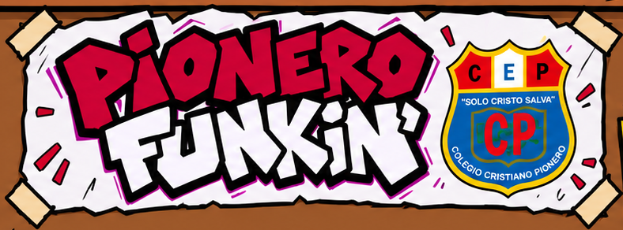

Descarga Pionero Funkin’
El mod de Friday Night Funkin’ inspirado en el Colegio Cristiano Pionero.
Versión 0.8.5 · Piloto
Descargas
En esta versión
Nueva cinemática para la canción secreta, integrada antes de empezar la batalla.
Cómo instalarlo
Windows
Descarga el ZIP y extráelo completo. Después, abre Pionero Funkin.exe sin separar los archivos de la carpeta.
Android
Descarga y abre el APK. Si ya tienes el mod, instálalo como actualización.
Por ahora no hay versión para iPhone o iPad.